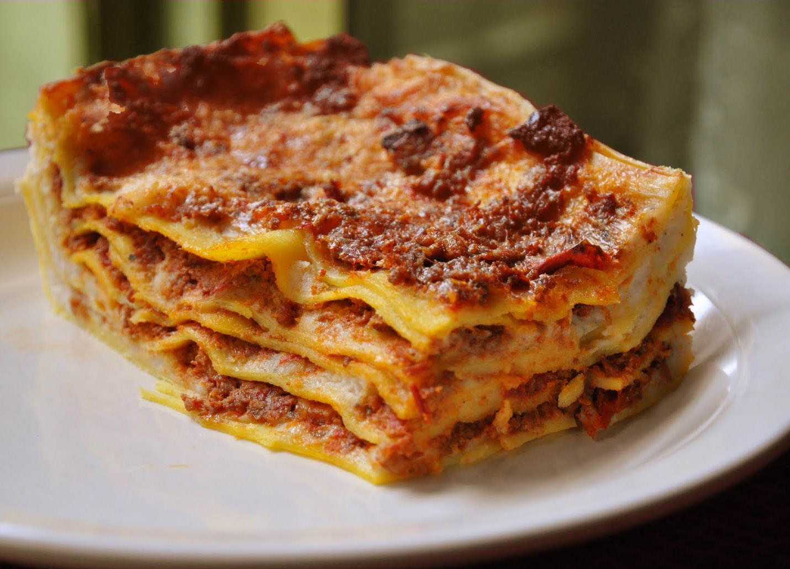

Lasagna Bolognese Recipe
More Recipe

Image: Lasagna Bolognese
Lasagna is a type of pasta, possibly one of the oldest types, made in very wide, flat sheets. In Italian cuisine it is made of stacked layers of pasta alternating with fillings such
as ragù (ground meats and tomato sauce), béchamel sauce, vegetables, cheeses (which may include ricotta, mozzarella, and Parmesan), and seasonings and spices.
The dish may be topped with grated cheese, which melts during baking. Typically cooked pasta is assembled with the other ingredients and then baked in an oven
(al forno). The resulting baked pasta is cut into single-serving square or rectangular portions.
Lasagna originated in Italy during the Middle Ages. The oldest transcribed text about lasagna appears in 1282 in the Memoriali Bolognesi
('Bolognese Memorials'),in which lasagna was mentioned in a poem transcribed by a Bolognese notary; while the first recorded recipe was set down in
the early 14th century in the Liber de Coquina (The Book of Cookery).It bore only a slight resemblance to the later traditional form of lasagna,
featuring a fermented dough flattened into thin sheets, boiled, sprinkled with cheese and spices, and then eaten with a small pointed stick.
Recipes written in the century following the Liber de Coquina recommended boiling the pasta in chicken broth and dressing it with cheese and chicken fat.
In a recipe adapted for the Lenten fast, walnuts were recommended.
Lasagna Bolognese Ingredients
For the Bolognese sauce:
- 1 tbsp olive oil
- 1 onion, finely chopped
- 2 garlic cloves, minced
- 2 celery stalks, finely chopped
- 2 carrots, finely chopped
- 500g (1 lb) ground beef
- 500g (1 lb) ground pork
- 1/2 cup red wine
- 1 can (400g) crushed tomatoes
- 2 tbsp tomato paste
- 1/2 cup milk
- 1/2 tsp dried oregano
- 1/2 tsp dried basil
- Salt and pepper to taste
For the Bechamel sauce:
- 14 tbsp butter
- Pinch of nutmeg
- Salt and pepper to taste
- 4 tbsp all-purpose flour
For the lasagna:
- 12-15 lasagna noodles (depending on the size of your baking dish)
- 2 cups (200g) grated mozzarella cheese
- 1/2 cup (50g) grated Parmesan cheese
Making The Lasagna Step By Step
Make the Bolognese Sauce:
- Heat olive oil in a large pot over medium heat. Add the chopped onion, garlic,
celery, and carrots. Cook until the vegetables are soft (about 5-7 minutes).
- Add the ground beef and pork to the pot. Cook until browned,
breaking up the meat with a spoon as it cooks.
- Pour in the red wine and let it cook off, about 2-3 minutes.
- Stir in the crushed tomatoes, tomato paste, oregano, basil,
and a pinch of salt and pepper.
- Let the sauce simmer uncovered for 45 minutes to an hour, stirring occasionally. It should thicken and develop a deep flavor. If it
gets too thick, you can add a bit of water to reach the desired consistency.
- Add milk to the sauce at the end and simmer for another 5-10 minutes. Taste and adjust seasoning.
Make the Bechamel Sauce:
- In a saucepan, melt the butter over medium heat.
- Stir in the flour and cook for 1-2 minutes until it forms a paste (roux).
- Slowly pour in the milk, whisking constantly to prevent lumps. Continue to cook and whisk until
the sauce thickens, about 5-7 minutes.
- Add a pinch of nutmeg, and season with salt and pepper. Stir until smooth and creamy.
Remove from heat.
Assemble the Lasagna::
- Preheat your oven to 375°F (190°C).
- Cook the lasagna noodles according to the package directions. Drain and set aside.
- Spread a thin layer of Bolognese sauce in the bottom of a large baking dish.
- Place a layer of lasagna noodles on top of the sauce.
- Spread some Bolognese sauce over the noodles, followed by a layer of bechamel sauce.
- Sprinkle with mozzarella and Parmesan cheese.
- Repeat the layers (noodles, Bolognese, bechamel, cheese) until all ingredients are used up, ending with a layer of cheese on top.
- Cover the lasagna with foil and bake for 25-30 minutes. Then, remove the foil and bake for another 10-15 minutes to brown the cheese and bubble the sauce.
Enjoy your delicious Lasagna Bolognese!